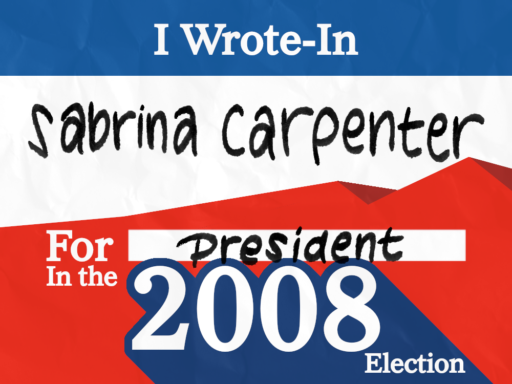

Welcome to Alex's High Quality Website, High Quality Backup, where I upload High Quality guides and art! Thank you (other) Alex for helping me make this website :) • Welcome to Alex's High Quality Website, High Quality Backup, where I upload High Quality guides and art! Thank you (other) Alex for helping me make this website :) •



© 2005-2026 Alex Zorzella | All Rights Reserved